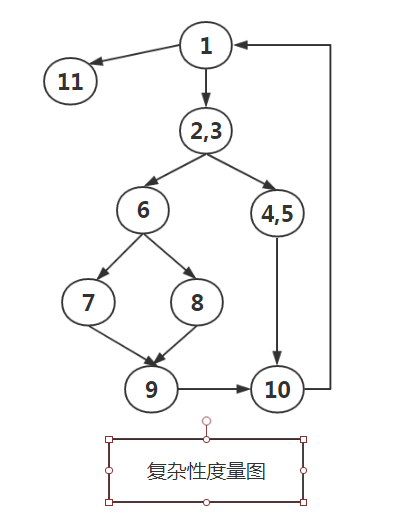

涉及软件度量与估算，软件项目管理与过程改进
2.1 软件度量
目的：为了使软件能够在指定成本、进度、质量要求下顺利完成，必须对软件工程项目进行计划、组织、监控和管理
任务：制定项目实施计划，对人员进行组织分工，按照计划的进度，以及成本管理风险管理质量管理的要求进行软件开发
特点：管理在软件工程项目中的低位和作用与其他工程项目一样；软件是逻辑产品，是开发小组集体的智力劳动，使用的开发工具也是软件；软件有很多属性无法直接度量，使得软件定量分析和项目管理变得困难
2.1.1 度量、测量和估算
度量：具有数字特征，软件工程范围内的度量是对软件产品，软件开发过程或资源间的简单属性的定量描述
eg.程序规模，操作符个数，程序中的错误个数
测量和估算是简单属性度量的函数 如软件成本和软件质量
测量：对软件开发过程，产品和资源进行的实时和时候的定量描述
直接测量：不依赖于其他属性的简单属性 如代码行数、操作符个数
间接测量：依赖于其他若干属性的软件要素准则和要求 如复杂性、模块性
估算：对软件开发过程、产品、资源进行预测（what）
估算可以采用经验公式、或参考历史资料（how）
估算用于事前签订合同、立项、制定工作计划等
软件的外部属性：软件产品、过程、资源与环境的关系
软件的内部属性：软件产品、过程、资源本身的属性
用户和管理者关心外部属性，但在开发过程中无法直接管理和控制，由外部属性和内部属性决定，因此必须建立外部属性和内部属性的映射关系
| 产品 | 过程 | 资源 | |
|---|---|---|---|
| 内部属性 | 代码长度、程序功能、模块化、重用性、耦合度 | 工作量、计划及进度 | 人、方法、经验 |
| 外部属性 | 可靠性、可维护性、可理解性、有效性 | 成本、稳定性 | 成本、时间 |
内部属性和外部属性：相关、映射
通过内部属性的度量解决某些外部属性的度量
2.1.2 面向规模的度量
代码行数：LOC 或者KLOC
生产率：P1 = L / E
L是代码行数(单位LOC或KLOC)
E是软件项目的工作量（单位:PM [人月]]）
P1是软件项目生产率，用每人月完成的代码行数（LOC/PM）度量
每行代码的平均成本： C1 = S / L
S是软件项目总开销（单位人民币或美元）
文档与代码比：D1 = Pd / L
Pd是软件项目的文档页数
代码出错率： EQR1 = Ne / L
Ne是软件项目的缺陷数，EQR是没千行代码的平均缺陷数
优点：简单、直观、易行
缺点：代码行数依赖于程序设计语言的功能和表达能力，在软件初期估算软件代码行数十分困难
2.1.3 面向功能的度量
功能点：FP (function point)
FP = CT * [0.65 + 0.01 * Fi] (5+14)
5个信息量的加权和CT
14个因素的复杂性调节值Fi （表15.4 15.5）
生产率：Pf = FP / E
平均成本： Cf = S/FP
文档与功能点比：Df = Pd / FP
代码出错率: EQRf = Ne / FP
优点:与程序设计语言无关，基本确定了系统输入输出
缺：涉及主观因素过多，数据不宜采集
2.2 软件项目估算
估算方法：
（1）参照已完成的类似项目，估算待开发项目的成本和工作量
（2）将大项目分解成若干子项目，估算每个子项目的…
（3）将项目按软件生存周期划分，估算每个周期，再…
（4）根据实验或历史数据给出项目工作量或成本的经验估算公式
2.2.1 代码行、功能点和工作量估算
E = （a + 4m + b）/6
估算出LOC或FP的乐观值a，悲观值b，一般值m
2.2.2 经验估算模型-COCOMO
Boehm提出，属性静态、单变量
基本COCOMO模型用于系统开发初期，用于软件制品设计阶段，估算整个系统的工作量和软件开发所需要的时间
中间COCOMO模型用于软件的详细设计阶段，估算各子系统的工作量和开发时间
详细COCOMO模型用于估算独立的软构件，如子系统内部的各个模块，软件的集成和测试
（1）基本COCOMO模型
1 | E = a（L）^b //E表示工作量，单位人月；L是LOC |
a、b、c、d是常数
（2）中间COCOMO模型
1 | E= a（L）^b EAF //在工作量估算公式中乘以工作量调节因此EAF |
估算项目人数 N = E(人月) / D(月)
事实：盲目增加程序人员的数目会推迟软件完成的周期
证明：若干人共同开发一个软件项目还应该增加他们之间相互通信和交换意见的额外工作量，N个人通信开销 Cn 2 = N（n-1） / 2
2.2.3 经验估算模型-Putnam
动态、多变量
描述了开发工作量、开发时间和软件代码行数之间的关系
1 | L = Ck E^1/3 td^4/3 //L是行数，Ck是软件开发安环境的常数，R表示功能量 Td是开发时间 |
1 | E = [LOC * B^0.33/3]^3 * (1/t^4) //... |
td对应于曲线的最大值，表示软件交付时工作量最大，参与软件项目的人最多
软件开发项目的工作量随着时间t的增长并不呈线性增长趋势，因此，参加软件开发的人员数目不是一成不变的。
如果按照线性分布方案配备人员，即每年的人数是常数，这样初始段将有部分人员是多于的，而峰值段人力又不够，到项目后期再增加人力为时已晚，造成浪费
缺点：虽然揭示了工作量、软件开发时间、程序代码长度三者的关系，但是没有反应产品、软件项目、软件开发人员和计算机软硬件资源等属性，所以Putnam模型估算还是粗糙的。
2.3 软件复杂性度量
…
2.3.1 软件复杂性及度量原则
复杂性：理解程序的难度、纠错、维护程序的难度、向他人解释程序的难度、按指定方法修改程序的难度、编写程序的工作量、执行程序所需资源的程序
原则：软件复杂性和软件规模的关系不是线性的、控制结构越复杂的程序越复杂、数据结构越复杂的程序越复杂、嵌套深度越深的程序越复杂、循环比选择结构复杂、选择比顺序结构复杂、转向语句使用不当会增加复杂性..
2.3.2 控制结构的复杂性度量
基于程序拓扑结构耳朵软件复杂性度量模型，一个有入口结点和一个出口节点的有向图，图中每个结点对应一个语句或一个具有顺序流程的程序代码块，弧对应程序中的转移
1 | 训回秩数V（G） = e - n + 2 //e是边数，n是顶点数 |
1 | void func(int nPosX,int nposY){ |

对于上图 V = 11 - 9 + 2 = 4
2.3.3 文本复杂性度量
…
2.4 软件可靠性度量
2.4.1 软件可靠性概念
概念：在某个给定的时间内，程序按照规约成功运行的概率
硬件：系统的故障率函数曲线呈浴盆式，开始：设计缺陷，故障率高；稳态：故障率较低；老化：滥用
软件：呈指数下降趋势
故障率函数 Z(t) = r
Z(t) = kt
2.4.2 软件修复和软件有效性
排除软件代码中的缺陷称为软件修复
平均修复时间（MTTR）
2.4.3 软件可靠性估算
(1)缺陷植入模型
鱼：N / Nt = n / nt
软件：ET / E1 = E2 /E0
ET是程序中原有的缺陷数
E1 是第一位程序员在[0,pi]时间内发现的缺陷数
E2 是第二位程序员在[0,pi]时间内发现的缺陷数
E0 是两位不约而同发现的
2.5 软件开发过程管理
2.5.1 风险分析
风险标识：项目开始对风险进行系统标识，并随着项目的展开不断更新
人员配备风险检测表
开发人员水平如何；开发人员技术是否配套；开发人员数量如何…
问题用0,1,2,3,4,5回答，值越大风险越大
2.5.2 进度安排
(1)团队根据最后期限从后往前安排时间
(2)根据项目和资源情况制定软件项目开发的初步计划和交付软件制品的日期
关键路径方法（CPM）
在网络图中，从任务开始到任务结束有许多条路径，完成整个任务时间最长的路径称为关键路径，关键路径上某些任务完成时间的延误会拖延整个项目完成的时间
2.5.3 软件开发标准
：是一个供人们使用的、与软件开发密切相关的术语定义、软件产品规范、文档大纲和各种活动的节目单
ISO/IEC 联合技术委员会
IEEE软件工程标准化技术委员会
DOD军用软件开发标准
2.5.4 软件质量保证
a.满足软件需求定义的功能和性能
b.软件文档符合预期确定的软件开发标准
c.软件文档的特点和属性遵循软件工程的目标和原则
有系统、you加护的软件质量保证活动（SQA）
2.5.5 软件开发人员的组织与分工
封闭型：按照传统的授权层次组织团队
随机型:团队组织松散，依赖于团队成员的主动性
开放型：封闭型和随机型的组合
同步型：按照问题自然划分，组织团队成员一一解决问题
树形结构组织软件开发人员，树的根是项目经理或总技术负责人
每层不超过7人
传统的主程序员团队是封闭型；高级工程师1人，技术人员2-5人
“无我程序设计”原则建立的软件民主开发小组
2.6 软件过程及软件成熟度模型
CMM进一步规范、指导软件开发组织的自身建设，使软件开发组织从混乱的、低效的不成熟状态，向有纪律的高效的成熟状态转变
2.6.2 CMM的基本概念
组织：管理软件项目，能对项目进行评估和过程改进的实体
项目：由组织承担的，并需要组织中各部门通力合作完成的指定制品开发和维护任务
软件过程：软件开发人员为维护软件及相关制品所实施的一系列步骤，这些步骤涉及方法、工具、及人的组织和行为
组织的标准软件过程：组织内部使用的软件过程，它描述软件过程和要素之间的关系，用它可以建立某一具体项目的软件过程
定义项目的软件过程：按照特点和要求，对组织的标准软件过程进行裁剪和描述
组织的软件过程资产：软件开发组织管理和控制的，用于软件过程定义和裁剪
关键过程域：描述软件过程的属性，通过完成一组相互关联的活动，实现建立过程能力至关重要的一组活动目标，是帮助确定软件开发组织的软件过程能力，评估软件成熟度的基本单元
| 成熟度等级 | 过程域 | 特点 |
|---|---|---|
| L1初始级 | 初始级软件几乎没有软件过程管理，软件开发是无序的和混乱的 | |
| L2 可重复级 | 制定了基本的软件项目管理和控制体系 | |
| L3已定义级 | ||
| L4 已管理级 | ||
| L5 优化级 |
2.6.3 能力成熟度模型CMMI
（1）阶段式模型 做了一 些填充和调整
（2）连续式模型 按照功能划分为过程管理、项目管理、工程、支持四个过程组
2019-05-11 20:03:45 星期六